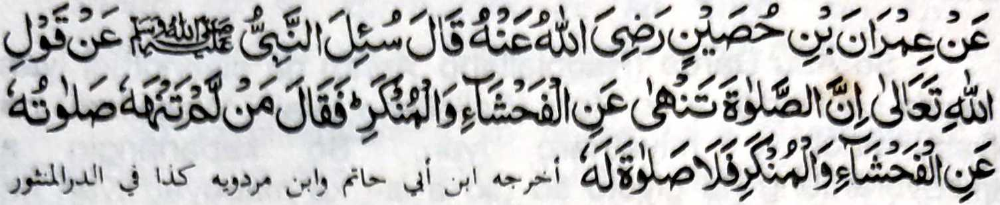
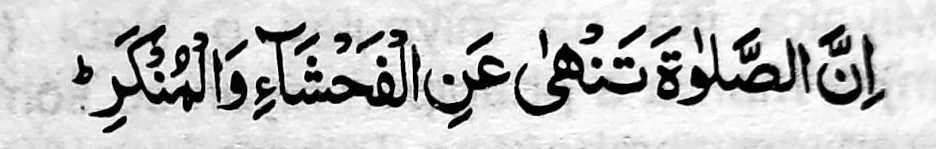

So ‘Imran bin Hosain na pitharo iyan, “Iniza-an so Nabi (Sallallaho ‘Alaihi wa Sallam) pantag ko katharo o Allah:
‘Mata-an a so Sambayang na phakasapar ko pakasisingai ago so marata,’ na pitharo iyan, ‘Sa tao a di ron makasapar so Sambayang iyan ko pakasisingai ago so marata na da-a Sambayang iyan.’”
Tanto a so Sambayang na titho a mala-i kipantag a simba asar ka phiya-piya-an, a aya rarad iyan na so kapakalidas ko pakasisingai. O di makowa so antap, na aden a khokorangan o gi-i kinggolalanen ko Sambayang. Madakel a Hadith a lagida-i a ma-ana niyan. So Ibn Abbas (Radhiallaho ‘Anho) na pitharo iyan, “So Sambayang na aden a bager iyan a karena niyan ko kitaliyadok ko manga dosa.”
So Abul ‘Aliah (Radhiallaho ‘Anho) ko kaphagosaya niyan sangkanan a miya-aloy a Ayaat sa Qur’an na inisorat iyan, “Telo a rokon o Sambayang:
So Sambayang na kena ba Sambayang amay ka mada-on angkanan a telo. So Ikhlas na ipethagompiya o ‘amaal a mapiya, so kalek ko Allah na pekhabogao niyan so marata, ago so taden-tadem Rekaniyan na giyoto so Qur’an, a sekaniyan mambo na toro-an ko mapiya ago linding ko marata.”
So Abu Hurairah (Radhiallaho ‘Anho) na piyanothol iyan, “Aden a tao a somiyong ko Nabi (Sallallaho ‘Alaihi wa Sallam) na piyanothol iyan a aden a mama, a aya ola-ola niyan na gi-i manambayang ko mababasa gawi-i ogaid na gi-i mamanekhao si-i ko kadaon-dao. Pitharo o Nabi (Sallallaho ‘Alaihi wa Sallam), ‘So Sambayang iyan na diden mathay na misapar iyan non bo angkanan a dosa.’”
Giya-i kiyarayag iyan a so marata a ola-ola na khada amay ka so tao na tatapen niyan so Sambayang sa tolabos a so-a-so-at iyan ko Allah. Tanto a maregen ago malendo a galebek so kalalas o pizatimananan a marata a ola-ola. Ogaid, na lebi a malebod ago maga-an so kapho-on mamayandeg ko Sambayang phiya-piya a misabap ko madadalemon a barakah, na so manga rarata na mazatiman so kapekhada iran. Phangeni naken ko Allah a began ako Niyan sa bager a minggolalan aken so Sambayang phiya-piya.